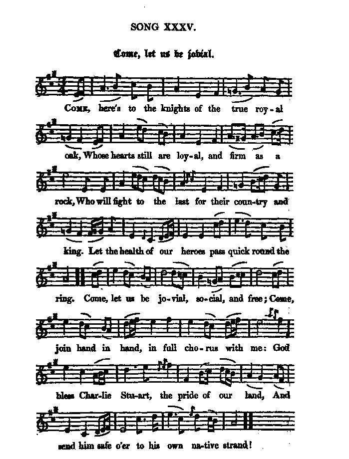

Come Let us be jovial!
Venez, soyez de bonne humeur!
A bacchanalian song in honour of James and Charles Stuart
from the "True Loyalist", 1779, page 63
and Hogg's "Jacobite Relics" 2nd Series N°35, page 71
Tune - Mélodie
"Come Let us be jovial!"
from Hogg's "Jacobite Relics" 2nd Series N°35, page 71
Sequenced by Christian Souchon

|
To the tune:
[This song] "is likewise from Mr Hardy's MSS and is rather a good song with a fine slow air." Hogg in "Jacobite Relics, 2nd series". |
A propos de la mélodie:
"Ce chant provient, lui aussi, des manuscrits de M. Hardy. C'est plutôt un beau chant avec une jolie mélodie". Hogg in "Jacobite Relics, 2nd series". |

|
COME LET US BE JOVIAL
1. Come, here's to the knights of the true royal oak Whose hearts still are loyal, and firm as a rock, Who will fight to the last for their country and king. Let the health of our heroes pass quick round the ring. Come, let us be jovial, social, and free; Come, join hand in hand, in full chorus with me: God bless Charlie Stuart, the pride of our land, And send him safe o'er to his own native strand! 2. My noble companions, be patient a while, And we'll soon see him back to our brave British isle: And he that for Stuart and right will not stand, May smart for the wrong by the Highlander's brand. Come, let us be jovial, &c. 3. Though Hanover now over Britain bears sway, The day of his glory is wearing away. His minions of slavery may march at his tail; For, God with the righteous, and who shall prevail ? Come, let us be jovial, &c. 4. And when James again shall be plac'd on the throne, All mem'ry of ills we have borne shall be gone. No tyrant again shall set foot on our shore, But all shall be happy and blest as before. Then let us be jovial, social, and free ; Lay your hands on your hearts, and sing chorus with me: God prosper King James, and the German confound, And may none but true Britons e'er rule British ground. Source: "The Jacobite Relics of Scotland, being the Songs, Airs and Legends of the Adherents to the House of Stuart" collected by James Hogg, published in Edinburgh by William Blackwood in 1819. |
VENEZ, SOYEZ DE BONNE HUMEUR!
1. Buvons aux chevaliers du Royal Chêne! Eux dont les cœurs demeurent loyaux et aussi fermes que le roc. Ils défendront leur pays et leur roi, prêts au sacrifice suprême. Que cette coupe vite circule à la santé de nos héros! Venez, soyez de bonne humeur, comme il sied à des hommes libres! Accourez! Après moi répétez en chœur, en vous tenant tous par la main: Charles Stuart est l'honneur du pays. Que Dieu veuille le conduire Sain et sauf jusqu'à nos rives, car ce pays est le sien! 2. Mes nobles compagnons, prenez patience: Bientôt vous le reverrez sur le sol de notre intrépide Albion. Quiconque pour les Stuarts et leurs droits n'éprouverait qu'indifférence Que celui-là soit stigmatisé par le glaive des Highlands! Venez... 3. Si Hanovre à présent Albion gouverne, Son moment de gloire éphémère va bientôt toucher à sa fin Toute la bande d'obséquieux laquais se pressant pour porter sa traîne Connaîtra qui l'emporte enfin et que Dieu rend justice à chacun! Venez... 4. Quand Jacques aura du sceptre l'usage, Et que nous oublierons les maux que jusqu'ici nous avons subis, Aucun tyran ne profanera plus, y posant le pied, ces rivages Et nous coulerons des jours heureux dans ce pays à nouveau béni! Venez, soyez de bonne humeur, comme il sied à des hommes libres! Mettez la main sur votre cœur et reprenez avec moi tous ce refrain: Au roi Jacques prospérité! Que nul s'il n'est vrai Britannique A l'avenir, ici, ne gouverne, et n'en déplaise au Germain! (Trad. Christian Souchon (c) 2010) |